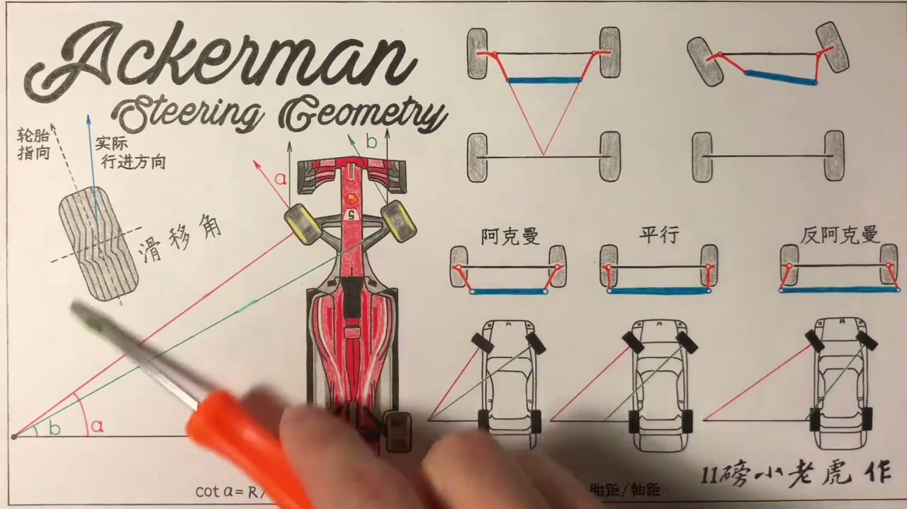
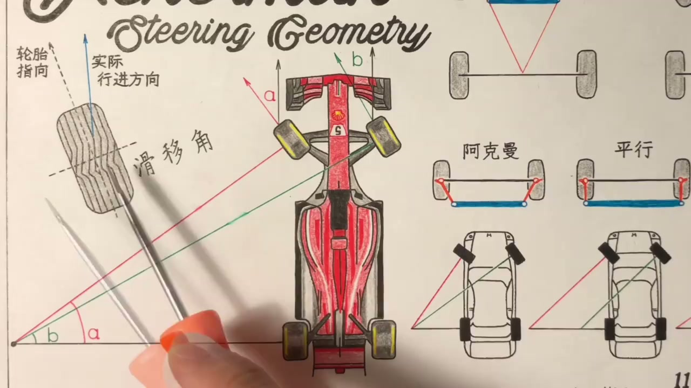
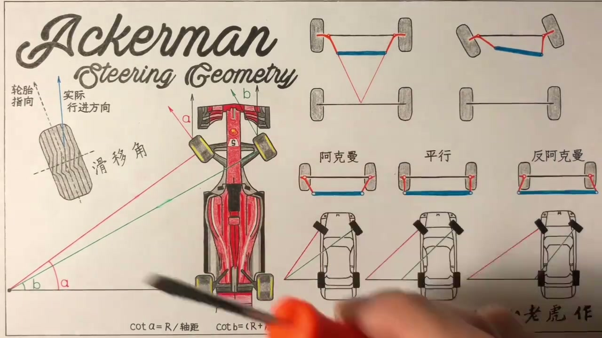
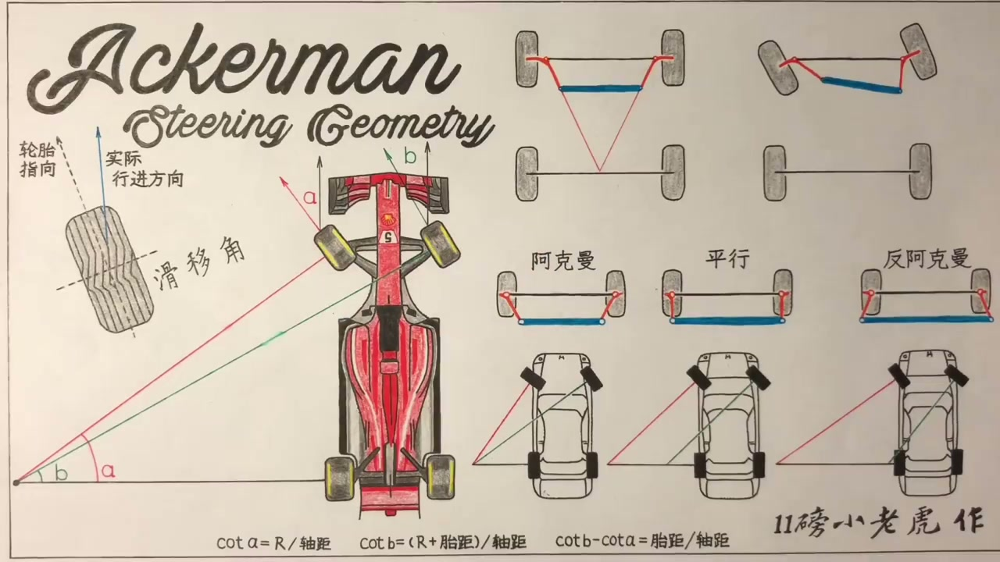
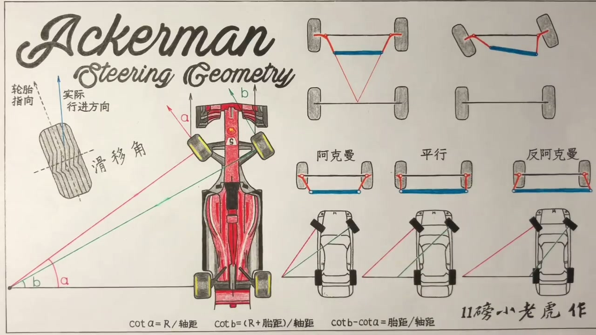

01
中文
现实世界里轮胎是橡胶做的，橡胶是会形变的。
EN
In the real world tires are rubber, and rubber deforms.
表达提示deform（形变）

Scene English · 汽车 · 转向几何
Ackermann Angle (2): Slip Angle and Anti-Ackermann
🎧 语音讲解
The Slip Angle
情境现实世界里轮胎是橡胶做的，橡胶会形变。打方向转弯时，轮胎指向已经转过来，但和地面接触的橡胶还拧着一股劲，实际行进方向总会打一点折扣。轮胎指向和实际行进方向之间的夹角就是滑移角。理论上完美的阿克曼不好用，就是因为有这个滑移角的存在。
现实世界里轮胎是橡胶做的，橡胶是会形变的。
In the real world tires are rubber, and rubber deforms.
表达提示deform（形变）
打方向时轮胎指向已转过来，但接触地面的橡胶还拧着劲，实际行进方向总要打折扣。
The tire points one way, but the contact patch lags—actual travel falls short.
表达提示contact patch（接地面积）
轮胎指向和实际行进方向的夹角就是滑移角。
The angle between tire heading and actual travel is the slip angle.
表达提示slip angle（滑移角）
理论上完美的阿克曼不好用，就是因为有这个滑移角的存在。
Perfect theoretical Ackermann fails because of the slip angle.
表达提示slip（滑动）
deform（形变
contact patch（接地面积

F1: The Extreme Case
情境用F1举例是因为它是汽车工业里最极端的例子：转弯速度最快，快速转弯势必带来重心转移。以150公里时速转弯时绝大多数重心都压到外侧轮上，内侧轮承受压力非常小，极限情况下内侧轮甚至轻微离地。
用F1来举例，因为它是汽车工业中最极端的例子。
F1 is the industry's most extreme example.
表达提示extreme（极端的）
F1转弯速度最快，快速转弯势必带来重心的转移。
Its cornering speeds are the highest, forcing big weight transfer.
表达提示weight transfer（重心转移）
150公里时速转弯时，绝大多数重心压到外侧轮上，内侧轮承受的压力非常小。
At 150 km/h in a corner, most load rides the outside tire; the inside barely loads.
表达提示outside tire（外侧轮）
extreme（极端的
weight transfer（重心转移

The Outside Wheel Needs More
情境压得越大力气转向，轮胎橡胶越拧巴、滑移角越大；不施加压力就几乎没有滑移角。F1过弯压力基本都在外侧轮，所以外侧轮的滑移角远大于内侧轮。为了让实际行进方向接近完美箭头，外侧轮胎的指向上要向左多转更多的角度。
压得越大力气转向，轮胎橡胶越是拧巴着，滑移角就越大。
More vertical load means more rubber twist—and a bigger slip angle.
表达提示vertical load（垂直载荷）
外侧轮承受压力大，它的滑移角远远大于内侧轮的滑移角。
The loaded outside tire develops a far larger slip angle than the inside.
表达提示far larger（远大于）
要减去滑移角之后实际行进方向才接近完美，所以外侧轮胎要向左多转更多角度。
After the slip-angle discount, the outside tire must steer farther left.
表达提示discount（折减）
vertical load（垂直载荷
far larger（远大于

Anti-Ackermann
情境这就是F1赛车上的反阿克曼转向几何设定：外侧轮转向角度明显大于内侧轮。F1转向设定还会根据赛道单独调校：高速弯多的赛道用激进的反阿克曼；蒙特卡洛这类低速弯、调头弯多的赛道，激进的反阿克曼就不合适了。
F1赛车上就是这种反阿克曼的设定：外侧轮转的角度明显大于内侧轮。
F1 runs anti-Ackermann: the outside wheel visibly turns more than the inside.
表达提示anti-Ackermann（反阿克曼）
绝大多数的赛道都是高速弯比较多，会设计成比较激进的反阿克曼。
Most tracks are fast-corner heavy, calling for aggressive anti-Ackermann.
表达提示aggressive（激进的）
蒙特卡洛有很多低速弯、调头弯，激进的反阿克曼设定就不合适了。
Monaco's slow hairpins make aggressive anti-Ackermann unsuitable.
表达提示hairpin（调头弯）
anti-Ackermann（反阿克曼
aggressive（激进的

Cornering Force from Slip
情境快速过弯靠的不是前轮打的方向，而是轮胎和地面摩擦产生的指向圆心的力，用来克服巨大的离心力。这个向心力只有在有了滑移角时才会产生，就是橡胶拧巴的劲。滑移角越大产生的摩擦力越大，大约5.5度时力达到最大值，这就是外侧转向轮的极限滑移角，此时能产生最大向心力，完成更高速度的过弯。
快速过弯看似靠前轮打的方向，其实靠的是轮胎和地面摩擦产生的指向圆心的力。
Fast cornering isn't about steering angle—it's the friction force pointing to the circle's center.
表达提示centripetal force（向心力）
这个指向圆心的力只有在有了滑移角的时候才会产生，就是橡胶拧巴的那股劲。
That force only exists with a slip angle—it's the rubber's twist.
表达提示rubber twist（橡胶拧劲）
滑移角大概5.5度时力达到最大值，这就是外侧转向轮的极限滑移角。
The force peaks around 5.5°, the outside tire's ideal slip angle.
表达提示peak（峰值）
在这个角度上能产生最大向心力，才能完成更高速度的过弯。
Max cornering force at this angle allows the fastest turns.
表达提示cornering force（过弯力）
centripetal force（向心力
rubber twist（橡胶拧劲

Street Car Setups
情境越家用的车设定越接近完美的100%阿克曼，因为家用车慢慢悠悠转弯不会产生多大滑移角，日常驾驶的顺畅才是第一位，硬开去赛道会体验到转向不足（推头）。偏运动的车型会往反阿克曼方向靠一靠，但不会疯狂到F1那样，也不会设计成0%平行的，一般介于两者之间，让外侧轮多转的角度正好和滑移角综合，达到指哪打哪，代价是低速大幅度转弯（如侧方停车）时轮胎可能打滑跳胎。
越家用的车设定越接近完美的100%阿克曼，因为日常顺畅的转弯才是第一位的。
Daily drivers lean toward 100% Ackermann for smooth, fuss-free turns.
表达提示daily driver（家用车）
偏运动的车型会往反阿克曼方向靠一靠，但一般介于两者之间。
Sportier cars lean toward anti-Ackermann but stay between the extremes.
表达提示in between（介于之间）
外侧轮多转的角度正好和滑移角综合，轮胎实际行进方向就和想要的方向完美契合，指哪打哪。
Extra outside steering cancels the slip angle—the car goes exactly where you point it.
表达提示point-and-shoot（指哪打哪）
代价是低速大幅度转弯时轮胎可能打滑跳胎，特别是冷车冷胎的情况下。
The price: scrubbing in slow, tight turns—especially on cold tires.
表达提示scrubbing（打滑跳胎）
daily driver（家用车
in between（介于之间

How to Adjust Ackermann
情境改装阿克曼其实很简单：黄色部分就是羊角，在羊角上重新钻一个洞，把蓝色转向拉杆的球头从原来的洞接到前面那个洞里。因为在一台轴距胎距固定的车上，阿克曼调整就是两个点的调整：轮子转动的轴心点和羊角与转向球头连接点，两点定了腰的方向就定了，会合点也就定了。
改装阿克曼非常简单：在羊角上重新钻一个洞，把转向拉杆的球头接到新的洞里。
It's simple: drill a new hole in the knuckle and move the tie-rod ball joint into it.
表达提示knuckle（羊角）
在轴距胎距固定的车上，阿克曼调整实际上就是两个点的调整。
With fixed wheelbase and track, Ackermann tuning is really about two points.
表达提示two points（两个点）
两个点定了，两条腰的方向就定了，延长线在哪里会合也就定了。
Fix the two points, and the two arms' directions—and their meeting point—are set.
表达提示meeting point（会合点）
knuckle（羊角
two points（两个点

Spacers Ruin the Calibration
情境加装法兰盘把轮子向外平移，本质就是改变了胎距参数。原来100%阿克曼的三条线交于一点，加法兰盘后红绿线各往两边平移，那个点就不存在了，原厂设计的阿克曼标定被完全破坏。实际汽车悬挂转向涉及的变量比想象的要多得多，乱改轮毂影响的东西很多。
加装法兰盘把两个前轮向外横移，本质上就是改变了胎距的参数。
Bolt-on spacers push the wheels outward—in effect changing the track.
表达提示spacers（法兰盘）
原来交于一点的三条线，经法兰盘一加那个点就不存在了，阿克曼标定完全被破坏。
The three lines once met at one point; with spacers the point vanishes and the calibration is ruined.
表达提示calibration（标定）
乱改轮毂所影响的悬挂变量，肯定比你想象的要来得多。
Messing with wheels touches far more suspension variables than you'd expect.
表达提示variables（变量）
spacers（法兰盘
calibration（标定
Rear Slip and Four-Wheel Steering
情境这里只讨论了前轮的转向和前轮的滑移角，其实后轮也存在滑移角，因为转弯靠的指向圆心的向心力一定要借助滑移角才能形成。四轮转向车型后轮也能左右打方向，相当于把图再复杂化一点，但本质原理一样。
其实后轮也是存在滑移角的，向心力的产生一定要借助滑移角才能形成。
The rear tires have slip angles too—cornering force requires it.
表达提示rear tires（后轮）
有些车型带四轮转向，后轮也可以左右打方向，本质的原理是一样的。
Four-wheel steering lets the rear turn too—same underlying physics.
表达提示four-wheel steering（四轮转向）
rear tires（后轮
four-wheel steering（四轮转向
说滑移角
说重心转移
说反阿克曼
说向心力
说民用设定
说改阿克曼
滑移角让完美阿克曼失效。
赛道不同调校不同。
法兰盘破坏标定。
四轮转向原理相同。
低速冷胎会跳胎。